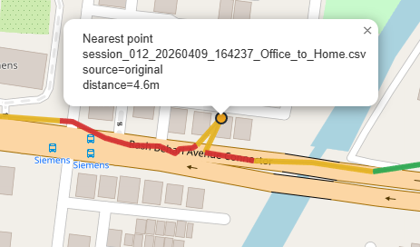
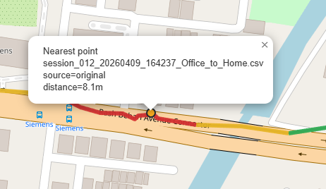
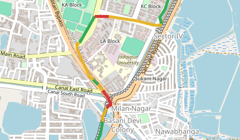
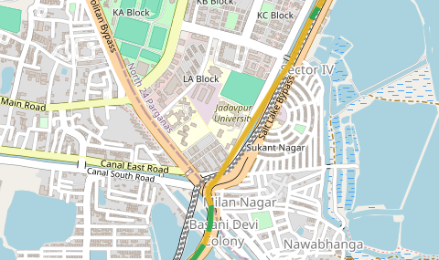
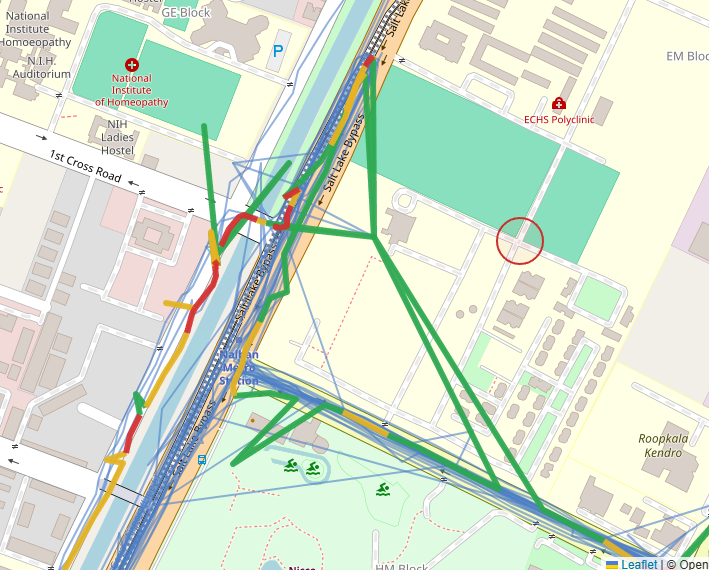
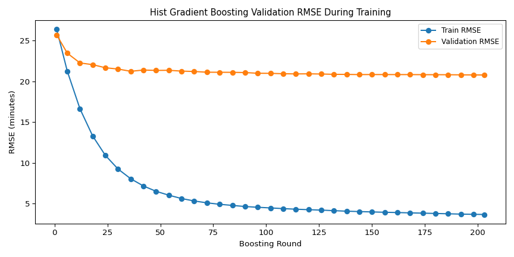
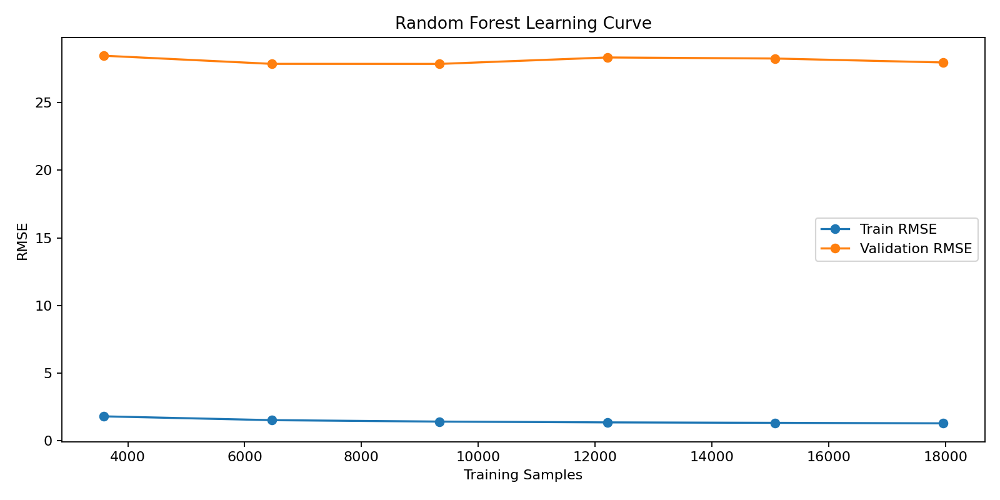
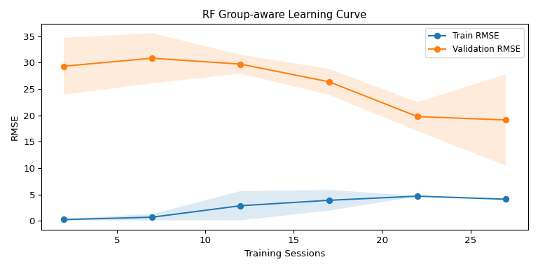
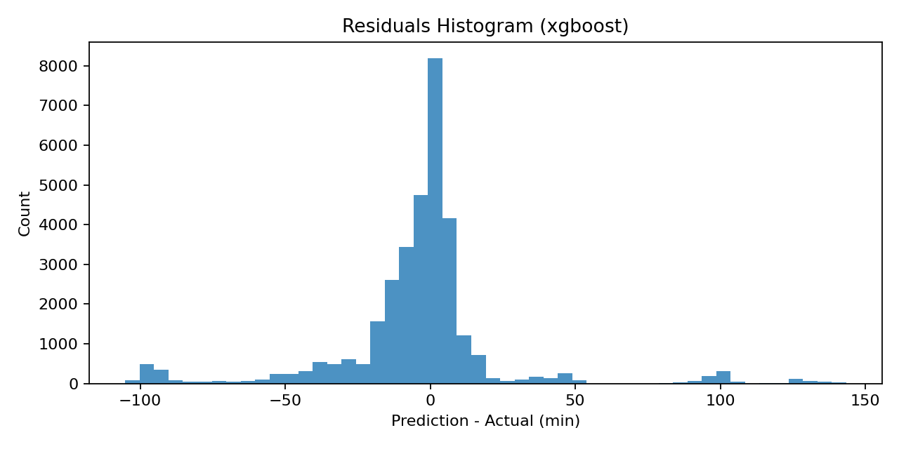

Kolkata Bus ETA Model Documentation
This page documents data collection, cleaning, snapping, feature engineering, model selection, training outputs, and deployment usage.
1) Project Summary
Model artifact file: model_outputs/eta_model.joblib (this is the trained model bundle).
2) Data Collection and Route Baselines
Golden baseline sessions currently enforced: morning Home-to-Office => 43, evening Office-to-Home => 35.
3) CSV Schema and Column Meaning
Raw CSV Columns
Training Features Used
Rejected or Non-training Fields
4) Data Cleaning and Snapping Strategy
GPS points are cleaned and snapped onto route baselines to reduce apparent off-road jumps. The latest snapping is sequence-aware and elastic: nearest projection to baseline polyline + monotonic progress enforcement + stretch/compress redistribution to avoid greedy clumping and teleport-like skips on diverge/converge route segments.
Output snapped dataset folder: csv_snapped
4A) Data Cleaning BEFORE (raw CSV stage)
- Input source: dynamic discovery of all session CSV files from
csv/(orcsv_snapped/when selected). - Schema normalization: parse latitude/longitude/timestamp safely, reject malformed rows, keep row index mapping for traceability.
- GPS sanity filtering: remove impossible coordinates and non-finite numeric values.
- Temporal ordering: rows are processed in sequence so downstream progress calculations stay consistent.
- Session retention policy: partial sessions are not discarded; valid observed portions are retained for profile-based filling.
- Manual correction support: in cleaner mode, deleting a point (for example deleting B from A-B-C) reconnects neighbors directly (A-C), preserving a continuous polyline.
- After manual deletion and reconnection, traffic visualization is recomputed so segment colors update to reflect the new local speed and congestion context.


4B) Data Cleaning AFTER (post-snap and training assembly)
- Route snapping output: each GPS point is projected to route baseline geometry with monotonic progress constraints.
- Elastic redistribution: reduces local over-clumping and large jump artifacts that appear at merge/diverge road sections.
- Gap handling: missing route bins in incomplete sessions are imputed from weighted route profiles.
- Feature assembly: progress, speed context, congestion context, route type, vehicle class, weekday, and time-of-day are generated per sample.
- Train/test split discipline: group-aware split by session ID to reduce leakage between training and testing.


4D) Data Quality Finding: Corrupted Session Boundaries
The predicted-versus-actual plots exposed a data problem before a model problem. Several exported sessions contain stale GPS points from another date or continue recording after a long pause. Because the target is calculated as the final session timestamp minus the current timestamp, those rows become impossible ETA targets.
- One recovered session contained a first point dated 2026-09-02 even though the session was recorded on 2026-09-22. Its target ETA reached approximately 28,794 minutes.
- Other sessions contained multi-hour gaps or points from the previous day, producing targets above 700 or 1,000 minutes.
- These outliers create horizontal prediction bands, inflate RMSE, produce extreme tree-model predictions, and make the validation scatter look structured instead of cloud-like.
- The negative predictions visible in the HistGradientBoosting plot are also a consequence of unconstrained regression extrapolation in the presence of corrupted targets. ETA post-processing should clamp predictions to zero or use a non-negative model objective.
Implemented preprocessing: the trainer now uses the date and start time embedded in each session filename as the session anchor, discards points outside a three-hour recording window, and truncates a session at the first gap longer than 20 minutes. The snapped data, route profiles, training tables, metrics, and model artifact have been regenerated with --force-resnap. The cleaned training table contains no targets above 180 minutes.
4C) Google Fused Location Limitations — Clustering and Off-Road Bias
The Google Location Services fused location provider (a typical source in Android apps) merges GPS, Wi-Fi, and cellular signal data to estimate position. While often more stable than raw GPS, this fusion creates predictable pathologies:
- Cluster Convergence: When Google's estimator has high confidence in a location (e.g., a known Wi-Fi AP or persistent cellular triangulation), it can lock onto that point across multiple requests, resulting in 5–10+ duplicate coordinates. This appears as a stationary cluster or "frozen" position for several consecutive samples.
- Off-Road Drift into Structures: The fusion engine sometimes favors nearby Wi-Fi or cellular ground-truth over actual GPS heading, causing abrupt off-road jumps into nearby buildings or parking areas—even when the vehicle is actively on the road.
- Coherent Bias Pattern: Unlike random jitter, fused location errors often return to the same point (e.g., the Wi-Fi router location), making them both predictable and difficult to filter naively. Simple distance thresholds alone fail because the repeated point is internally consistent.
Impact on ETA Modeling: Clusters inflate the per-segment sample count at hotspots without adding real speed information, and off-road jumps can distort the velocity computation for affected segments. The elastic snapping algorithm mitigates this downstream, but upstream deduplication and Wi-Fi-bias detection would reduce noise earlier in the pipeline.

5) Partial Session Handling
Sessions with incomplete route coverage are retained. The observed section contributes directly, while missing bins are imputed from weighted route profiles built across sessions. This allows training on both full and partial tracks without discarding useful signal.
6) Model Selection and Metrics
Compared models include Random Forest, Hist Gradient Boosting, and XGBoost.
Error Comparison (MAE / RMSE)

Predicted vs Actual

Hist Gradient Boosting Training Progress

Random Forest Training Progress

XGBoost Learning Curve

RF Group-aware Learning Curve

Shown as mean ± std across repeated session-level splits. Raw numbers: model_outputs/rf_learning_curve_raw.json
Residuals (Best Model)

See model_outputs/accuracy_details.txt for numeric MAE/RMSE/R² and notes about regression metrics.
9) Model Performance: Distance Traveled vs Remaining ETA
This chart is computed from real route profile data, not synthetic samples. We use each profile point latitude/longitude to compute ground distance with the Haversine formula, then estimate remaining ETA from per-segment speed and congestion. X-axis is distance traveled from start (kilometers), Y-axis is remaining ETA (minutes).
10) Training Parameters
- Route references: morning=43, evening=35
- Bin size: 120 meters
- Group-aware split by session ID
- Features: route type, vehicle class, time-of-day, weekday, route progress, off-route distance, local/global speed context, support count
- Speed feature note: model uses computed speed from snapped progress over time (distance/time), not device satellite speed field.
- Target: ETA remaining minutes
- Training command used:
C:/Python313/python.exe train_eta_model.py --skip-resnap
7) Session-Aware Ensemble: General + Specific Accuracy
Problem: Loading latest cross-session vs baseline behavior...
Solution: Session-aware ensemble blends two sources of truth:
- General Accuracy = latest best global model + local profile predictions (70% weight).
- Specific Accuracy = per-session baseline ETA (30% weight). Captures this particular session's typical completion time.
Example (Session 43, Morning, 50% Progress at 08:00):
Benefit: The 31.58 min estimate is anchored to session 43's typical behavior (26.63 min) while staying responsive to current route conditions. Without session blending, the estimate would be 33.75 min—overestimating for a session that usually finishes faster.
Use in `predict_eta.py`:
C:/Python313/python.exe predict_eta.py --route morning --start-time 08:00 --progress-ratio 0.5 --session-id 43
Output includes: session_aware_blend_weight: 0.3, session_baseline_eta_min: 26.63
8) Model Metrics and Accuracy Trade-offs
9) Deployed Usage
Use the deployed app at eta_model_app.html.
- Choose route (morning/evening) and start time.
- Toggle mode: "Current Location" or "Set Destination".
- Click a geographic point on the baseline polyline to set current location or destination.
- Run prediction to get ETA and expected arrival time.
- Inspect choke points colored by congestion (green/yellow/red).
10) Limitations and Edge Cases
- Loading latest limitations from current training summary...
Why Accuracy Is Currently Low
- Low signal-to-noise at point level: GPS jitter and stop-and-go bursts introduce high local variance in remaining ETA labels.
- Insufficient condition coverage: the model has fewer examples for unusual congestion states (for example, severe evening bottlenecks).
- Hidden heterogeneity: different morning route variants may share partial geometry but have different delays and turning penalties.
- Limited explanatory variables: when key causal variables are missing, residual error remains high even with stronger models.
11) Expected Improvement with More Data + Bayesian ETA Modeling
As more sessions are collected, the model should improve because each route segment is observed under more traffic states and departure times. This reduces variance and makes feature-response relationships more stable.
Additional Parameters That Should Be Added
- Route variant identity as an explicit variable for morning direction.
- Lagged congestion context (recent bins) to represent queue propagation.
- Calendar context (weekday/weekend, holiday/event flags) and weather/incident indicators when available.
Morning Route Variants (V1-V4)
- V1 (Best): Chingrihata allowed, forced right at Philips (no Technopolis).
- V2: Chingrihata allowed, Technopolis forced (no Philips right).
- V3: Forced left at Chingrihata, right at Philips allowed.
- V4 (impossible in practice): forced left plus Technopolis forced.
How Bayesian Theory Helps Further
- Bayesian ETA estimates a distribution, not only a single number, producing credible intervals for uncertainty-aware decisions.
- Priors can encode known traffic tendencies (for example, congestion at 6:00 PM tends to be higher than at 5:00 PM on this corridor).
- As new trips arrive, posterior updates adapt the model incrementally without full retraining from scratch.
- Hierarchical Bayesian structure can share strength across route variants while still learning variant-specific delay patterns.
- Result: lower error over time, better calibration, and more reliable ETA confidence bands for operations.